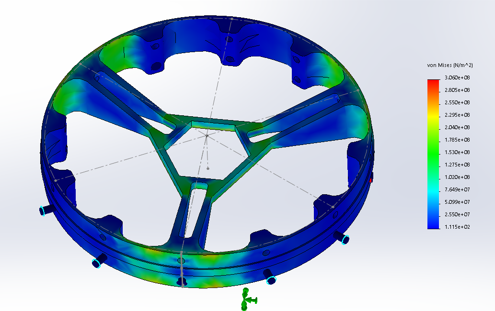

|
PARSEC is Caltech's rocketry club. We're in the process of building our first rocket, powered by our Methane/LOX, 3D printed Valyrie-I
rocket engine. I'm the team's structures lead, in charge of coordinating the design and manufacturing process for the internal
structure of the rocket. To date, I've also personally designed a custom launch lug designed to passively jettison shortly after
launch, and the support structure for the rocket's pressurant (nitrogen) tank.
For more information about PARSEC, here's a link to our website. |
Rocket Profile
Rocket Profile - Inside |
|
PARSEC needed to design a custom launch lug after finding that the off-the-shelf alternatives were far too heavy. The lug needed to
mate our rocket to a T-shaped launch rail during takeoff, then retract inside the rocket to decrease drag.
Early in the design process, it occurred to me that the lightest launch lug would be one that the ejected itself from the rocket immediately after clearing the launch rail. To that end, my design contains three main parts. A spring-loaded clamp (blue) grabs the launch rail during takeoff, and is constrained inside a tube attached to the rocket by a trio of ball bearings. The bearings themselves are constrained by a spring-loaded button (orange) that can only extend and free the bearings once the rocket has left the launch rail. Finally, the clamp/button interface with the rocket via the third piece (gray), which itself glues to the inner wall of the rocket's carbon fiber shell. A spring-loaded hinged cover (not shown) will close after the clamp is ejected, covering the hole left behind by the clamp. A 3D-printed lug worked successfully during tests, proving the basic concept is valid. I'm currently working to increase the part's machinabilty before we build the final launch lug out of stainless steel and aluminum. |
Isometric View of the Launch Lug CAD
Section View of the Launch Lug CAD, Showing the Spring-Loaded Button and Ball Bearings |
| The rocket's pressurant tank needed a lightweight support structure to constrain the tank under acceleration and deceleration. We also needed room beneath the tank to route plumbing. The orginal structure (top) was my first large solidworks assembly; I recently had the opportunity to redesign it for a new pressurant tank, reminding me of how much I've learned in CAD over the past two years. |
Side View of the Tank Support CAD - Old Top, New Bottom  Solidworks FEA Simulation of Retaining Ring Under Load |